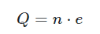
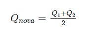
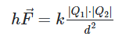
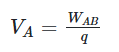
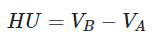
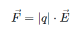
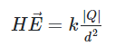
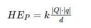
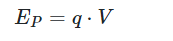

Eletrostática
A Eletrostática é a área da Física responsável por estudar as cargas elétricas desconsiderando seu movimento. Os fenômenos eletrostáticos estudados por essa área do conhecimento surgem em decorrência da força de atração e repulsão que as cargas elétricas exercem umas sobre as outras. É regida por dois princípios: o princípio da atração e repulsão das cargas elétricas e o princípio de conservação das cargas.
Cargas Elétricas
A carga elétrica é uma propriedade intrínseca (própria) das partículas fundamentais da matéria, como prótons e elétrons, assim como a massa. Corpos eletricamente neutros apresentam a mesma quantidade de cargas elétricas positivas e negativas. A unidade de carga elétrica no Sistema Internacional de Unidades é o Coulomb (C).
A carga elétrica é quantizada, o que quer dizer que ela possui um valor mínimo de ±1,6 ∙10−19 C (positivo para prótons e negativo para elétrons), conhecido como carga elementar. É impossível encontrar corpos eletrizados com menos dessa quantidade. Sua unidade de medida, de acordo com o Sistema Internacional de Unidades, é o Coulomb, representado pela letra C.
Eletrização por contato
A eletrização por contato ocorre quando colocamos um corpo eletricamente carregado em contato com outro corpo. Com isso, ambos os corpos passarão a ter o mesmo sinal e a mesma quantidade de carga elétrica, já que houve uma transferência de cargas, como podemos ver na imagem abaixo.
Eletrização por atrito
A eletrização por atrito ocorre ao atritarmos dois corpos eletricamente neutros feitos de materiais diferentes. Durante esse processo, um corpo perderá elétrons, e o outro ganhará elétrons. Após o atrito, ambos estarão eletrizados, mas com sinais opostos, sendo que um corpo ficará eletrizado positivamente, e o outro, negativamente, podendo assim se atraírem, como podemos ver na imagem.
Eletrização por indução
A eletrização por indução ocorre pela aproximação relativa entre um corpo eletricamente carregado, chamado de indutor, e um corpo condutor, chamado de induzido. A presença do corpo eletricamente carregado (indutor) gera uma separação de cargas no corpo condutor (induzido), chamada de polarização. A partir dessa separação, aterra-se o induzido no chão, fazendo com que suas cargas fluam através de um fio terra.
Força Elétrica
A força elétrica é uma grandeza física vetorial, se tratando de uma força de interação entre as cargas elétricas que varia de acordo com a distância entre elas. Os corpos com cargas elétricas de sinais iguais repelem-se, e corpos cujas cargas elétricas possuem sinais contrários atraem-se.
Sua unidade de medida, de acordo com o Sistema Internacional de Unidades, é o Newton, representado pela letra N.
Potencial Elétrico
O potencial elétrico é uma grandeza física escalar que mede o trabalho da força elétrica para deslocar uma carga de um ponto a outro. É mais comum encontrarmos o termo diferença de potencial elétrico ou tensão elétrica, que nada mais é que a diferença entre dois potenciais elétricos. Sua unidade de medida, de acordo com o Sistema Internacional de Unidades, é o Volt, representado pela letra V.
Campo Elétrico
O campo elétrico é uma grandeza física vetorial que mede a influência de uma carga elétrica sobre os seus arredores. Ao redor de um corpo eletricamente carregado surgirá um campo elétrico.
Se a carga que gerou esse campo for de sinal negativo, seu campo elétrico aponta para o interior da carga, mas se a carga for de sinal positivo, seu campo elétrico aponta para fora da carga, como podemos ver na imagem.
Sua unidade de medida, de acordo com o Sistema Internacional de Unidades, é o Newton por Coulomb, representado por (N/C).
Energia Potencial Elétrica
A energia potencial elétrica é uma grandeza física escalar relacionada à interação entre cargas, sendo assim uma forma de energia relacionada à posição relativa entre pares de cargas elétricas. Caso uma dessas cargas esteja se movimentando, a energia potencial elétrica é transformada em energia cinética. De acordo com o Sistema Internacional de Unidades, a energia potencial elétrica é medida em Joule, representado pela letra J.
Princípios da Eletrostática
Existem dois princípios da Eletrostática: o princípio da atração e repulsão e o princípio da conservação das cargas elétricas.
Princípio da atração e repulsão
De acordo com esse princípio, as cargas elétricas que possuem o mesmo sinal se repelem, enquanto as cargas elétricas de sinais diferentes se atraem.
Princípio da conservação das cargas elétricas
De acordo com esse princípio, se considerarmos um sistema isolado, ou seja, sem troca de cargas elétricas com o meio externo, o somatório das cargas antes do processo de eletrização é o mesmo que o somatório das cargas depois do processo de eletrização. Sendo assim, a carga elétrica é conservada, então não pode ser criada, muito menos destruída.
Fórmulas da Eletrostática
Carga elétrica
Q → carga elétrica total de um corpo, medida em Coulomb [C].
n → quantidade de elétrons ou prótons em falta ou em excesso, medida em Coulomb [C].
e → carga elementar ou carga do elétron, cujo valor é ±1,6 ⋅10−19 C, positivo para prótons e negativo para elétrons.
Cargas elétricas em contato
Qnova → carga nova de cada condutor, medida em Coulomb [C].
Q1 e Q2 → cargas iniciais de cada condutor, medidas em Coulomb [C].
Força elétrica ou lei de Coulomb
F → força de interação entre as partículas eletricamente carregadas, medida em Newton [N].
|Q1| e |Q2| → módulos das cargas das partículas, medidos em Coulomb [C].
d → distância entre as cargas, medida em metros [m].
k → constante eletrostática do meio, medida em (N⋅m)2>/C2.
Potencial elétrico
VA → potencial elétrico no ponto A, medido em Volts [V].
WAB → trabalho da força elétrica para deslocar uma carga do ponto A ao ponto B, medido em Joule [J].
q → carga elétrica, medida em Coulomb [C].
Diferença de potencial elétrico (ddp)
U → diferença de potencial elétrico (ddp), medida em Volts [V].
VA→ potencial elétrico no ponto A, medido em Volts [V].
VB → potencial elétrico no ponto B, medido em Volts [V].
Campo elétrico relacionado com a força elétrica
F → força de interação entre as partículas eletricamente carregadas, medida em Newton [N].
q → carga elétrica, medida em Coulomb [C].
E → campo elétrico, medido em [N/C].
Campo elétrico
E → campo elétrico, medido em Newton [N].
|Q| → módulo da carga da partícula geradora do campo, medido em Coulomb [C].
d → distância entre as cargas, medida em metros [m].
k → constante eletrostática do meio, medida em (N⋅m)2/C2.
Energia potencial elétrica
Ep → energia potencial elétrica, medida em Joule [J].
|Q| → módulo da carga elétrica fonte, medida em Coulomb [C].
|q| → módulo da carga elétrica de prova, medida em Coulomb [C].
d → distância entre as cargas, medida em metros [m].
k → constante eletrostática do meio, medida em (N∙m)2/C2.
Energia potencial elétrica relacionada ao potencial elétrico
Ep → energia potencial elétrica, medida em Joule [J].
q → carga elétrica geradora, medida em coulomb [C].
V → potencial elétrico, medido em Volts [V].